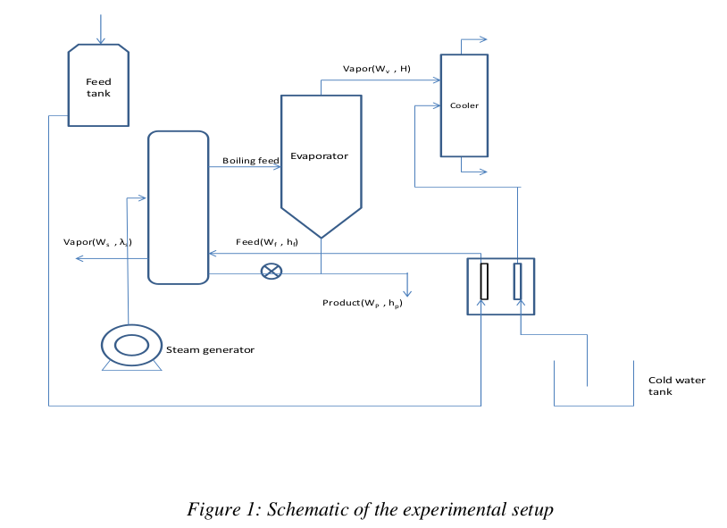
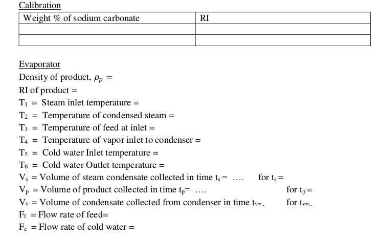
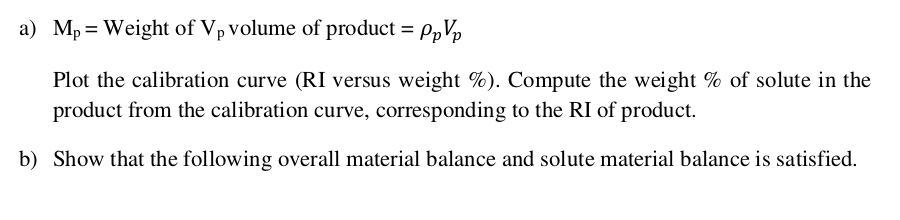
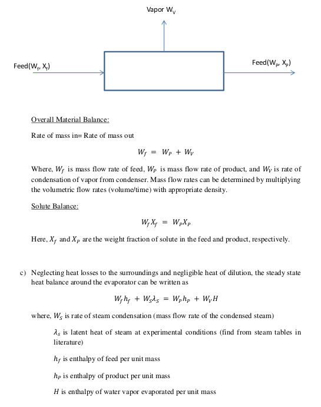
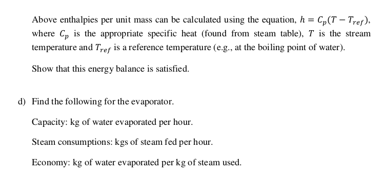

SINGLE EFFECT EVAPORATOR
AIM
I. To perform the material and energy balance and determine the capacity, steam
consumption, and economy of a single effect evaporator.
THEORY
Evaporation is a process of concentrating the solution of a non-volatile solute and
volatile solvent (water). The concentrated solution is produced by the removal of required
amount of volatile solvent. The heat is supplied to the solution to increase the temperature of
the solution to its boiling point and to evaporate the solvent from the solution.

EXPERIMENTAL SETUP SCHEMATIC AND DESCRIPTION
The set up consists of stainless steel tubes surrounded by a stainless steel jacket fitted with
accumulator. Dilute solution is fed to tubes. Steam from steam generator is supplied to shell to
concentrate the dilute feed solution to a desired level. The jacket is fitted with steam trap and the
condensate is collected at the end of trap. The vapors of volatile solvent are condensed in a shell
and tube type condenser and the balance non-volatile solute collected in the accumulator is
recycled through the evaporator
EXPERIMENTAL PROCEDURE
Starting Procedure
- Tabulate refractive index (RI) versus weight % for sodium carbonate and water solution at
room temperature by performing experiments of different weight % of solutions (at least five
different solutions, 5 wt/ %, 10 wt/ %, 20 wt. %, 30 wt. %, 40 wt. %)
- Prepare 5% solution of sodium carbonate in water.
- Close all the valves.
- Fill cooling water tank with water.
- Open funnel valve and air vent valve to steam generator and fill it 3/4 th with water.
- Close both the valves.
- Ensure that switches given on the panel are at OFF position.
- Connect electric supply to the set up.
- Set the desired steam temperature (110℃ to 120℃) by operating the increment or decrement
and set button of DTC.
- Switch ON the heater and wait till desired temperature achieves.
- Open the funnel valve and vent valve of feed tank, fill the solution in feed tank and close both
the valve after it.
- Connect compressed air supply to the set up and adjust the pressure of the feed tank in the
range 0.5 to 1 kg/cm 2 by pressure regulator and pressure gauge.
- Open feed supply valve and allow feed to enter in the evaporator by control valve and
Rotameter.
- Open steam valve supply.
- Open vent valve before steam trap to release air and then close the valve.
- Stop feed supply valve through Rotameter after maintaining a level of solution in front glass
of evaporator.
- Open recirculation valve and wait till observing rise in temperature of vapor.
- Switch ON the pump and set the flow rate of cooling water by Rotameter.
- Partially open the product outlet valve and start collecting the product in tank.
- Open feed supply from Rotameter and adjust the flow rate of feed so that the level of solution
in the side glass remains constant.
- Record the flow rate of steam condensed by measuring cylinder and stop watch.
- Record the evaporated vapor condensation rate by measuring cylinder and stop watch.
- Record the temperature and flow rate of product.
- Measure the density of the product using density bottle.
- Measure the refractive index of the product.
Closing Procedure
- When experiment is over switch OFF heaters.
- Partially open vent valve of steam generator to release pressure.
- Switch OFF the pump.
- Switch OFF Power Supply to Panel.
- Stop compressed air supply to the set up and release air pressure by the regulator.
- Drain feed tank by the drain valve provided.
- Drain the evaporator liquid by the product outlet valve.
- Drain the condenser by the drain valve provided.
- Drain water from steam generator.
OBSERVATIONS AND CALCULATIONS

Calculations



DISCUSSIONS
- Suggest methods to improve the economy of the evaporator.
- If you have performed the open pan evaporator experiment, discuss the similarities and
differences between the two experiments.
PRECAUTIONS
- Never run the apparatus if power supply is less than 180 volts and above 230 volts.
- Never switch ON mains power supply before ensuring that all the ON/OFF switches
given on the panel are at OFF position.
- Operator should switch OFF the temperature indicator gently.
- Always keep the apparatus free from dust.
REFERENCES
- McCabe W.L., Smith J.C., Harrirott P., "Unit Operations of Chemical Engineering", 7th ed.
McGraw Hill, NY 2005. page 487-488, 500-502
- Arora.Domkundwar, "A Course in Heat and Mass Transfer", 6th ed., Dhanpat Rai &
CO.(P)LTD., NY, 2003, Page A.6, A.9
- Geankoplis C.J."Transport Processes and Separation Process Principles", 4th ed., PHI
Learning Private LTD., NY 2008, page 534-541
- Rajput R.K., "Thermal Engineering", 6th ed., Laxmi publications (P) LTD, 2006, page 1653-
1663